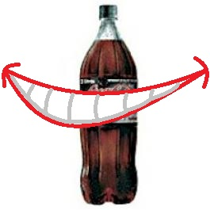

vamo, vamo, vamo…
Posts tagged Testemunhos Alex
Vodú é pra Jacú
67 years
by Alecão
in Ex-sedentário
 Quem estiver me alfinetando, por favor pare.
Quem estiver me alfinetando, por favor pare.
Há 2 semanas, ao sentar em uma cadeira de plástico na praça de alimentação, a cadeira se deformou, fui para o chão, com bandeja de comida e junto foi uma vergonha enorme.
Segunda passada, cai na escada de entrada de onde trabalho. Com direito a vídeo cassetada da câmera de segurança. (Depois vou publicar aqui).
Quarta, foi a máxima. Dentro do busão, ao abaixar para pegar uma moeda, estava com o pé direito ligeiramente encurvado quando houve um solavanco (talvez uma lombada) e fui arremessado para cima pousando sobre o pé torto. Rodearam passarinhos sobre minha cabeça.
A dor maior nem é no pé, mas sim na alma. Pois estava mancando e nem conseguia descer escada…
“Você foi ao médico?” – Não…
Mas a dor está diminuindo e já consigo subir e descer escada e andar normalmente sem mancar.
Sara logo!
Vídeo reportagem do 5º Desafio da Mata Atlântica
57 years
by Alecão
in Ex-sedentário
Sei, sei… vão dizer… “Mas esta aventura foi faz tempo”.
É o dia-a-dia corrido nosso. Pegar os arquivos, editar, subir para o youtube… leva tempo. Mas ontem tomei coragem e fiz isso tudo.
Rever o vídeo me emocionou. Pois eu estava gripado, tanto que depois da prova tive febre alta e fiquei de molho.
Adorei lembrar da largada, da dificuldade, da visão linda da serra do mar, da paisagem postal, do Enio dos Baleias nos esperando na chegada, do chocolate quente, do brinde (tim-tim)…
Ela sorri para mim
57 years
by Alecão
in Ex-sedentário
No dia 30 de julho, eu e Claudio fizemos uma aposta um com o outro de não tomar cerveja até o dia da maratona do Pão de Açucar… Era uma forma de incentivar e apimentar os esforços para a superação. Ai eu disse que parar de tomar cerveja nem seria um esforço grande porque já estava pensando em parar mesmo.
Ai que ele resolveu aumentar a aposta. “Então vamos incluir refrigerante”. E eu aceitei.
Na mesma sexta feira, já teve festinha dos aniversariantes do mês na empresa e CHEIO de refrigerante.
No sábado, minha mulher comprou um garrafa de 2 litros de coca-zero.
Na segunda feira, o pessoal do trabalho pediu uma coca de 2 litros no almoço…
Que perseguição…
E eu pensando que a cerveja iria fazer falta. Nem penso em cerveja, apenas na maldita garrafa de coca. E quando vejo a garrafa, pode ter certeza, ela está sorrindo para mim e diz. “Me bebe, me bebe, me bebe”.
Primeira Corridinha
07 years
by Alecão
in Ex-sedentário
 Ontem, era sábado e veio a oportunidade de treinar na parte da manhã, como meus filhos dormiram fora de casa, eu e minha mulher fomos tomar café da manhã em uma padaria, já saí de casa com a roupa para treinar.
Ontem, era sábado e veio a oportunidade de treinar na parte da manhã, como meus filhos dormiram fora de casa, eu e minha mulher fomos tomar café da manhã em uma padaria, já saí de casa com a roupa para treinar.
Estava muito frio e aos poucos a empolgação para treinar foi diminuindo. Ao sair da padaria, uma garoa fina caía na cabeça. Falei para minha mulher, me deixe em casa… E ela, “não, você vai treinar”. Como dizer não depois dessa, foi o empurrão que eu precisava. Então ela me deixou no início do trajeto e foi embora.
Estava muito frio, pensei, vou correr para esquentar os ossos e parti já em um rítimo acelerado para ao qual estou acostumado e não parei mais. O corpo foi esquentar apenas aos 20 minutos de treino, quando o trotar começou a ficar prazeroso.
A sensação é muito boa e nessas horas vem na cabeça: Por que enrolo tanto para voltar a treinar?
Fui até o ponto que eu já sei que era meu limite para o momento e voltei, conseguindo correr até outro ponto em que pensei, chega por hoje Alex. E continuei andando até chegar em casa. Foram 34 minutos de corrida e mais 6 andando num total de 4,3 Km.
Hoje com um pouco de dor na pernas resolvi maneirar e fui com a família em uma rua de lazer. Os 4 caminharam por 28 minutos. Interessante que a mulher e filhos estão embarcando nessa comigo.

Segunda caminhada
17 years
by Alecão
in Ex-sedentário
Ontem eu fiz outra caminhada, desta vez mais leve, porque na primeira eu consegui ganhar bolhas no pé. Claro que o problema era o calçado não adequado, justo eu que sempre me atento a estes detalhes, mas desta vez me deu branco.
Foi uma caminhada de 40 minutos, menos que eu esperava, mesmo assim gostei de faze-la.
Tenho caminhado a noite e a partir de amanhã pretendo mudar os treinos para de manhã. Pretendo também começar a trotar.
Novamente um recomeço
17 years
by Alecão
in Ex-sedentário
Desde uma prova de 6 quilômetros no começo do ano, não estava conseguindo estabelecer uma rotina de treinos.
Olha que foram várias tentativas, primeiro tentei em março, mas ficou só em um simples treino. Um mês depois mais uma tentativa. Passou 2 meses até o outro treino em junho e depois disso encarei uma subidona sem estar treinado e ainda por cima gripado.
Foram treinos com um espaço de tempo muito grande entre um e outro. São recaídas de quem vem tendo problemas emocionais desde a visita ao médico, difícil entender o funcionamento de nossa cabeça.
Mas agora é diferente, tenho uma equipe para ajudar e preciso estar preparado. E hoje foi o start de todo o processo. Como estava parado a muito tempo, preciso começar devagar e esperar para que a “memória muscular” venha.
Comecei então com uma caminhada de 4 quilômetros que duraram 50 minutos. Foi um trajeto de aclive para ajudar na musculatura da perna.
Agora que comecei não vou parar mais e que venha os próximos treinos.
Como você pretende encarar esse desafio?
17 years
by Alecão
in Ex-sedentário
") Este desafio (5 quilometros, da maratona de revezamento do Pão de Açucar) é uma forma de voltar, de emagrecer e afastar os fantasmas que me assustam (possíveis problemas cardíacos futuros). Quando vou ao cardiologista, apesar de meus exames darem 100%, eles me colocam medo por causa do sobre-peso.
Este desafio (5 quilometros, da maratona de revezamento do Pão de Açucar) é uma forma de voltar, de emagrecer e afastar os fantasmas que me assustam (possíveis problemas cardíacos futuros). Quando vou ao cardiologista, apesar de meus exames darem 100%, eles me colocam medo por causa do sobre-peso.
Para mim, o desafio significa o início da longevidade, dar mais uma alegria aos meus filhos e provar a mim mesmo que é possível sim conseguir quando muitos dizem o contrário.

5º Desafio da Mata Atlântica – 2ª Parte
97 years
by Claudião
in Ex-sedentário
Quem estiver chegando agora, não deixe de ver o post anterior, onde há a impressão do Alex e as fotos, cuja maioria completa o sentido das que postarei agora.
Antes de tudo, parabenizo o meu grande parceiro Alecão, que com gripe e tudo mandou ver na Serra. Sua caminhada foi 10 e o seu espírito 1000. Com você foi tudo mais mágico, primão: eu te amo!
O dia não poderia ter sido mais especial. Durante a semana eu ameacei várias vezes vir aqui chorar a minha fraquesa e os quilos que só fazem aumentar. Mas em vez disso eu decidi sorrir na Serra.
A prova foi maravilhosa, com uma organização muito boa, diante de toda a logística envolvida. Desce-e-sobe de atletas e volumes, tudo pela Rodovia Anchieta. Sobe-e-desce de motoqueiros, pela própria pista, atentos e dipostos a ajudar a quem precisasse. Sou só elogios.


Muitos já foram os comentários. Todos efusivos que me deixam muito emocionado. Não tenho palavras para expressar a felicidade que sinto por tanto carinho e consideração com quem não tem o corpo de atleta amador. Sinto-me honrado pelo reconhecimento do “amador” que sou da atividade, interatividade e festividade com algo que é realmente bom. O corredor amigo que há muito nos acompanha no blog, Sandro Guedes, foi logo comentado sobre o nosso incentivo a galera. Valeu Sandro!!!!
Na prova, fomos nós mesmos, brincalhões. Atazanamos a todos. E o sorriso de aprovação não tem preço. Eu desejo muito que as pessoas que conhecemos venham até aqui resgatar as imagens e principalmente receber nosso caloroso abraço e consideração.
O Enio, coitado, foi pego no laço pelo Baleia Mor – Miguel Delgado – e preso com peia firme. E não ratiou, gostou até. O cara é um Santo. Já é amigo, viu. Sorte ou sina? O tempo lhe dirá… Se eu já sonhava maratonar por aí, sua história, incentivo e disposição para ajudar/participar, só fizeram aumentar esse sonho. Eu vou diminuir minhas recaídas, vou parar de aparecer mais gordo e mais magro em cada fotografia, e vou no caminho certo. Não foi apenas um encontro de Ex-Sedentários Baleias com integrante Baleia. Foi uma junção mesmo de amizade muito bacana. Valeu Miguel!


Sobre as pessoas da prova. Muitas me marcaram. Eu não sou sensitivo nem nada que o valha. Mas quando o Sr. Ítalo aproximou de mim com aquele sorrisão, senti uma energia muito forte, muito positiva. Senti como se meu pai tivesse aparecido ali. Senhor de 70 anos, com uma felicidade incrível fazendo aquele maravilhoso passeio junto do Filho, Ricardo, celebração pura. Além dele, inesquecível a imagem da Senhora Rosana. A felicidade dela se aproximando da chegada foi espetacular. São as duas imagens de força e felicidade que eu registrei para mim, e em fotografias (tomara que eles as encontrem por aqui).


Além deles houve as pessoas como nós, que se divertiram conosco e nos acolheram com a primeira olhada. Nas fotos se vê os Dundes (Claudio e Alex) e o Duendes da Serra. As Garotas Super Cor-de-Rosas, super simpáticas e super atletas, da equipe Lamartine: Heleni, Solange e Rosa. Eu espero vê-las muitas outras vezes.


Tirei muitas fotos bonitas do Cesar Conforti, que subiu decidido todo o percurso não demorando para deixar-nos para trás. Parabéns a você e a Helga (as fotos de vocês ficaram legais demais).


Outro abraço para a Vanessa e Luciana, troca de máquinas, fotos e poses e muitos sorrisos. Enfim, foi tudo muito maravilhoso e com certeza estou cometendo o grave pecado do esquecimento. Perdoem-me os não citados. Ah, engraçada demais a cena da Tomiko entre mim e o Alecão. Ela virou um cisquinho.
Mais uma vez agradeço ao trabalho técnico do Alecão que cuidou de todas as fotografias aqui.


.jpg "5-desafio-mata-atlantica")
5º Desafio da Mata Atlântica
127 years
by Alecão
in Ex-sedentário
Estava gripado e sem coragem de ir, mas o Thiago me incentivou e o Claudio também. E fui. Não me arrependi, foi maravilhoso mesmo com a gripe piorando quando cheguei em casa (tive muitas dores, nausea, ansia e febre), mas nada que um analgésico e 4 horas de soneca não resolvessem. To com gostinho de quero mais…
Nesta prova tivemos a oportunidade de conhecer o Enio integrante dos Baleias, muito bacana, gostei mesmo dele, nos incentivou bastante.
Sem mais enrolação, estou colocando as fotos que tiramos… São mais de 200 e tem mais para colocar, volte depois e olhe as fotos novas. Tem vídeo também que ainda estou editando e colocarei em outro post.
Ninguém merece
27 years
by Alecão
in Ex-sedentário

Estou gripado a 2 dias, peguei de minha esposa (impossível não pegar)… Essa época do ano é sempre assim. Duro é que o corpo fica mole, corisa, dores, insônia e desanima até ir a pé para ponto de ônibus. Mas o duro mesmo é esperar para voltar a rotina de treinos. PASSA LOGO!
.jpg "DSC01709 (576x1024)")
.jpg "DSC01804 (1024x576)")
.jpg "DSC01863 (1024x576)")
.jpg "DSC01874 (1024x576)")


{kind=link}
{kind=link}
{kind=link}
{kind=link}
{kind=link}
{kind=link}
{kind=link}
{kind=link}
{kind=link}
{kind=link}
{kind=link}
{kind=link}
{kind=link}
Últimos comentários